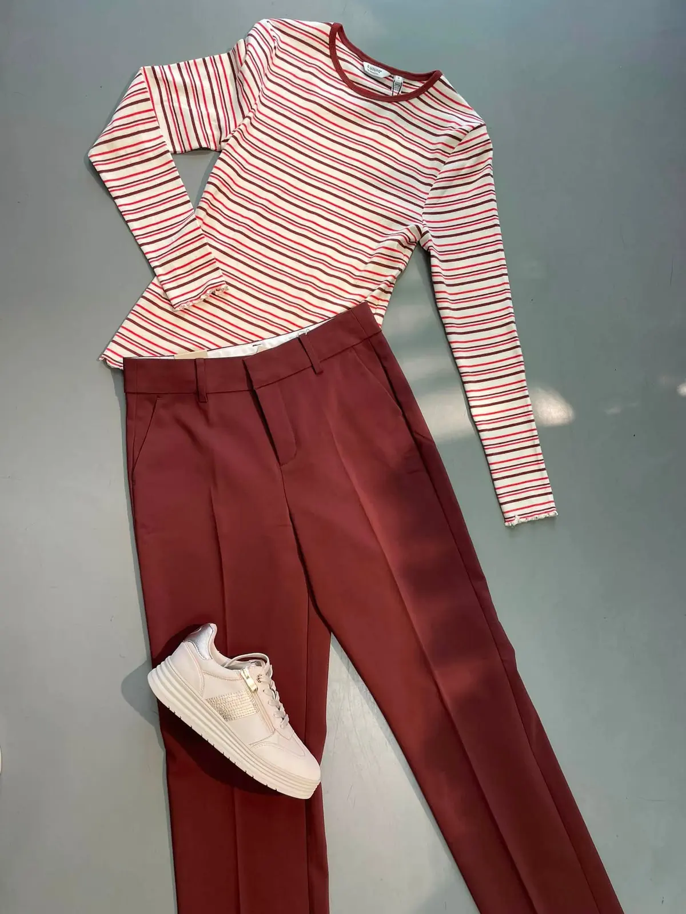
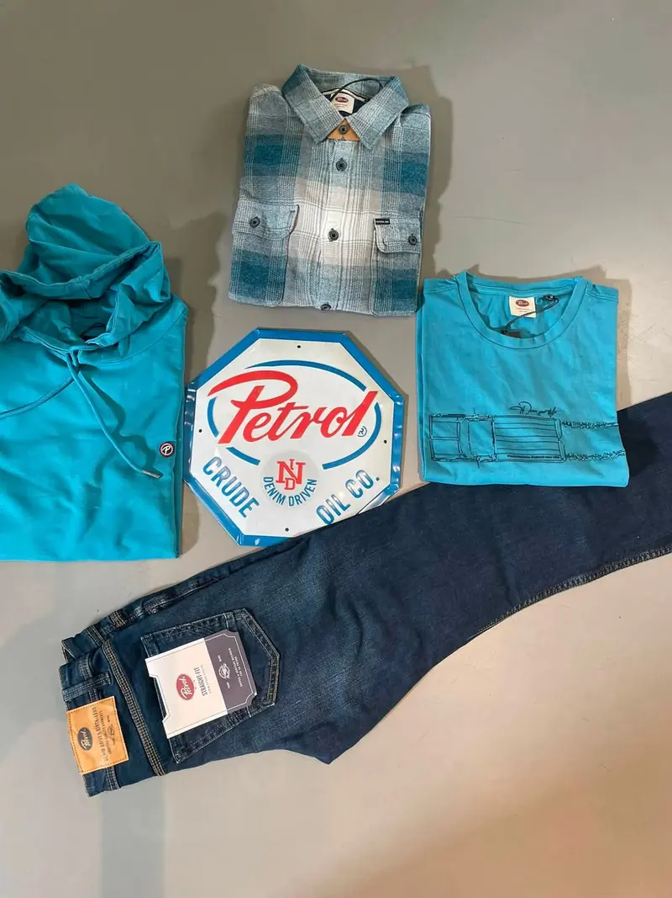
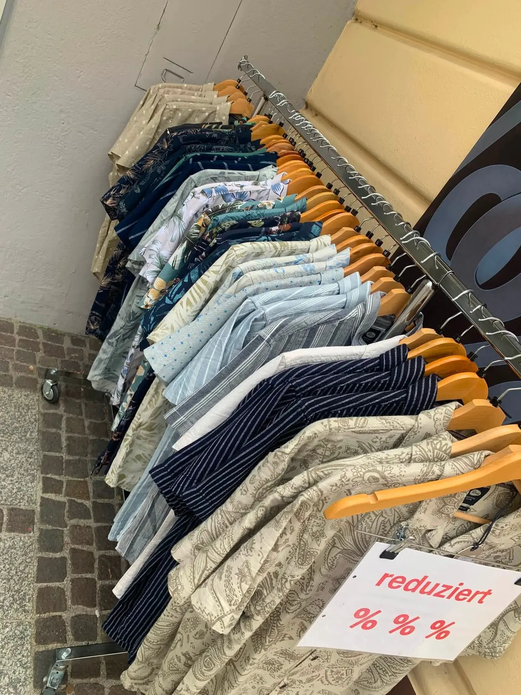
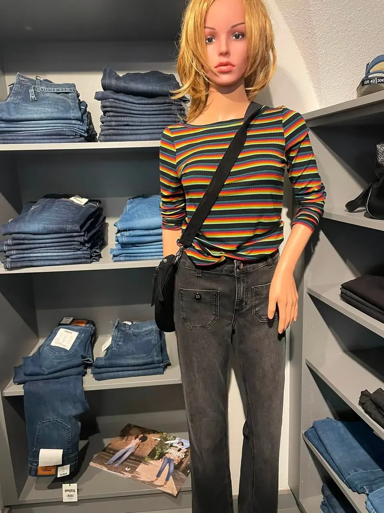
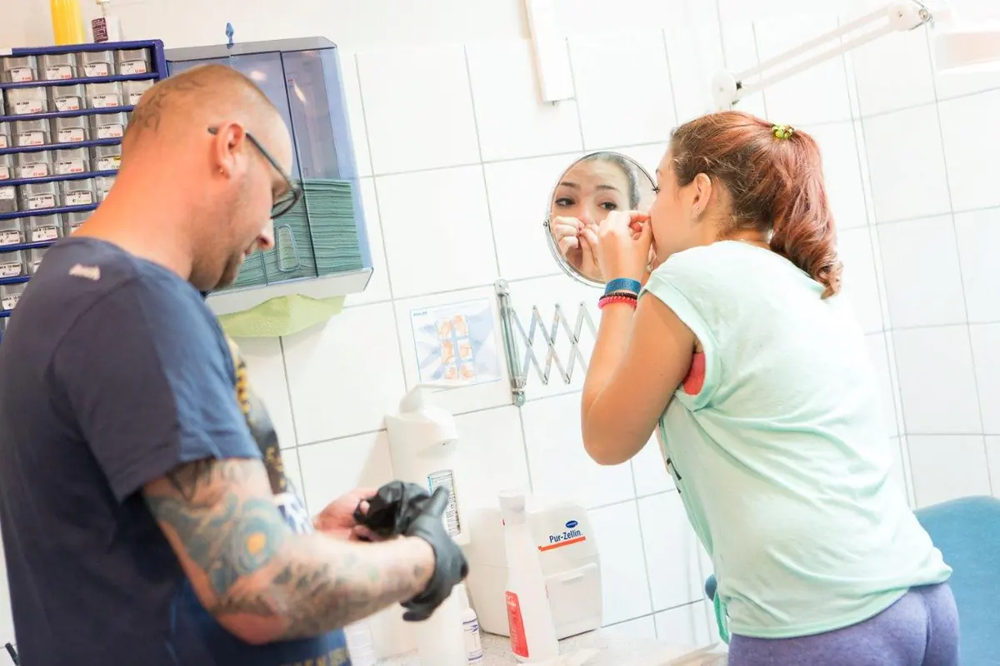

Mode in Scheibbs, die zu dir passt.
Großstadt-Fashion mitten im Mostviertel: Lieblingsstücke für Damen, Herren und junge Leute – persönlich ausgesucht, ehrlich beraten und zum Anprobieren statt Zurückschicken.

Scheibbs
Großstadt-Fashion.
Mitten im Mostviertel.
Jede Saison suchen wir persönlich aus, was ins Regal kommt: charakterstarke Damenmode, unkomplizierte Herren-Looks und frische Styles für junge Leute. Du probierst an, wir beraten ehrlich – und du gehst mit etwas heim, das wirklich passt.
Angebote? Tagesaktuell auf Facebook.
Reduzierte Einzelstücke, neue Lieferungen, Größen und Aktionstage posten wir dort, sobald sie da sind. Ein Klick genügt – oder du rufst kurz an, dann schauen wir direkt für dich nach.
Damen, Herren und
junge Mode.
Ein Einblick in das, was bei uns hängt. Das Sortiment wechselt laufend – was du hier siehst, sind Beispiele aus vergangenen Saisonen. Was gerade da ist, siehst du am besten im Geschäft oder auf Facebook.






Labels mit Haltung.
Unser Markensortiment wechselt mit den Saisonen und wird laufend erweitert – einzelne Marken kommen dazu, andere fallen weg. Welche Marken und Größen gerade im Store sind, erfährst du auf Facebook oder mit einem kurzen Anruf.
Gut zu wissen.
Die häufigsten Fragen rund um Mode im CORNER – kurz und ehrlich beantwortet.
Welche Marken gibt es im CORNER Scheibbs?
Wo finde ich die aktuellen Angebote?
Gibt es im CORNER auch Herrenmode und Mode für junge Leute?
Kann ich im Geschäft anprobieren und beraten werden?
Wann hat der CORNER Mode.Schuh.Treff geöffnet?
Wir freuen uns auf dich.
CORNER Mode.Schuh.Treff · Hauptstraße 40 · 3270 Scheibbs
office@corner-modetreff.at
9:30 – 18:00
9:00 – 12:30
geschlossen
Im selben Haus:
Piercing Avalon.
Daniel Graf piercet seit 1999 direkt im CORNER – alle gängigen Varianten, ruhige Beratung, Termine nur nach telefonischer Voranmeldung.
